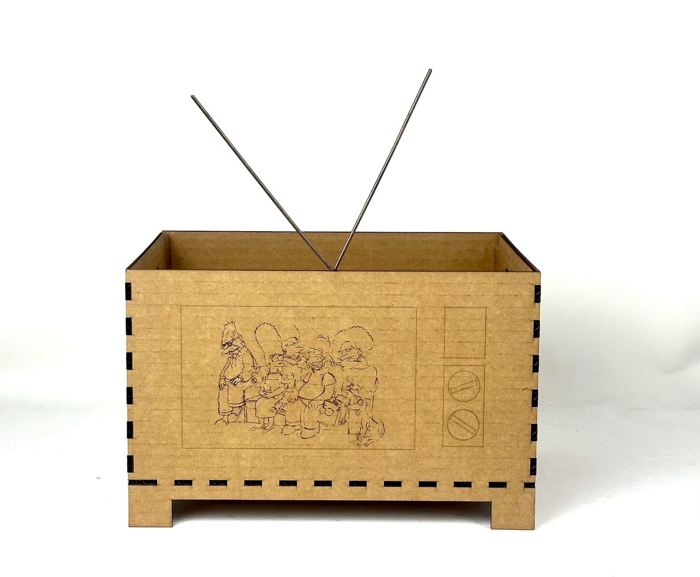
I decided to make a box with parametrically designed teeth that are calculated based off the lengths of the width, height, and depth of the box. The teeth were designed to fit together and cut on the laser cutter.
First I input the parameters, many of which were formulas that tied them to other parameters.
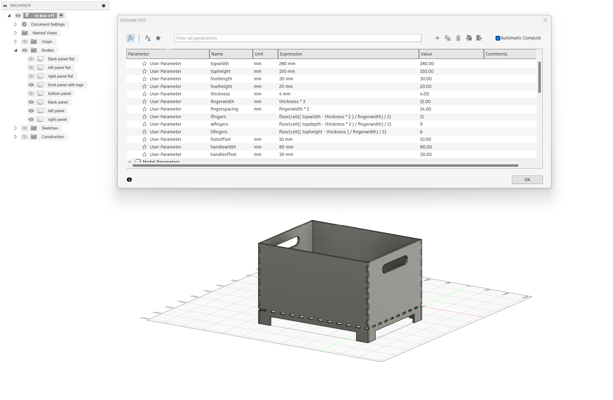
Then I deleted a face and the Fusion timeline got angry at me:
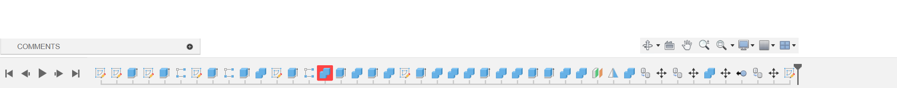
Look at that angry red square
Then I blew out the box so all faces were on one plane and I could project the box onto an outline to bring it into Rhino and send it to the laser cutter.
I wanted this box to look like an oldschool TV so I found an original Matt Groening line drawing of the Simpsons and converted it into a vector path in Photoshop.
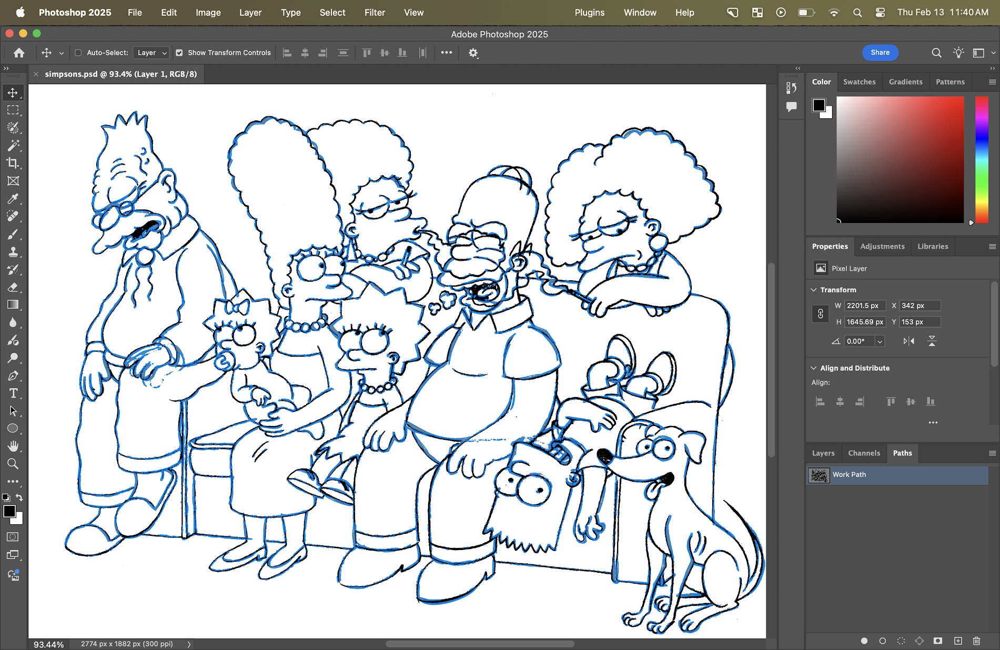
Then I imported the path and added some TV details in Rhino, before sending it to the laser cutter.
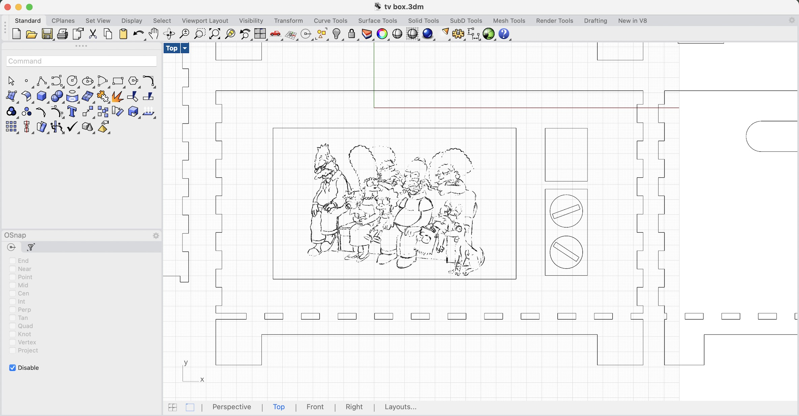
The laser cutter took 45 seconds to cut out the box. BUT IT TOOK 45 MINUTES TO ENGRAVE THE SIMPSONS. Big learning. Straight cuts are fast, intricate drawing is slow.
When I tried to put the pieces together, I realized that some of the teeth hadn't been cut out from one of the sides. Some manual intervention was necessary.
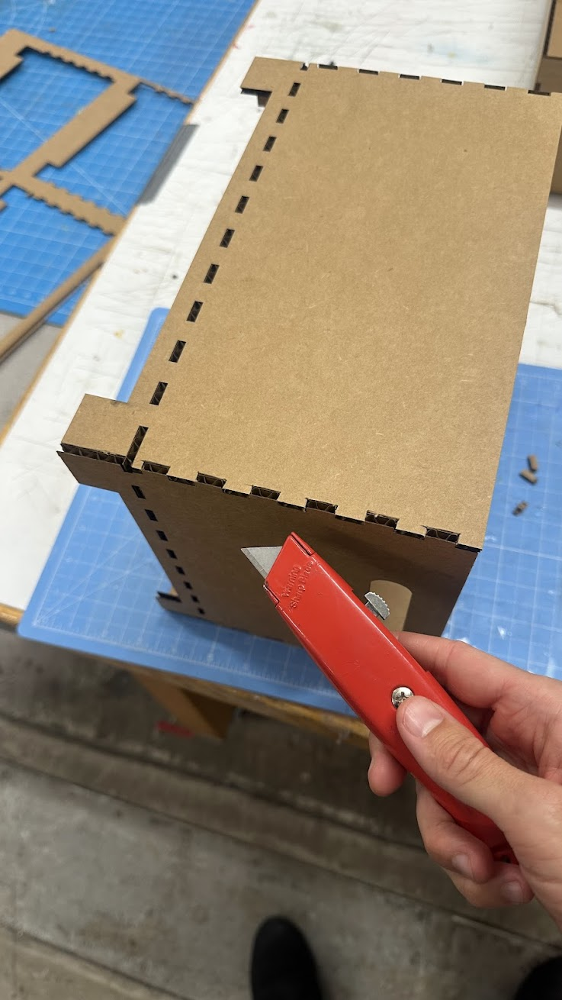
Lastly I hotglued the joints together for sturdiness and added an antenna made from scrap wire left in the shop. Done!
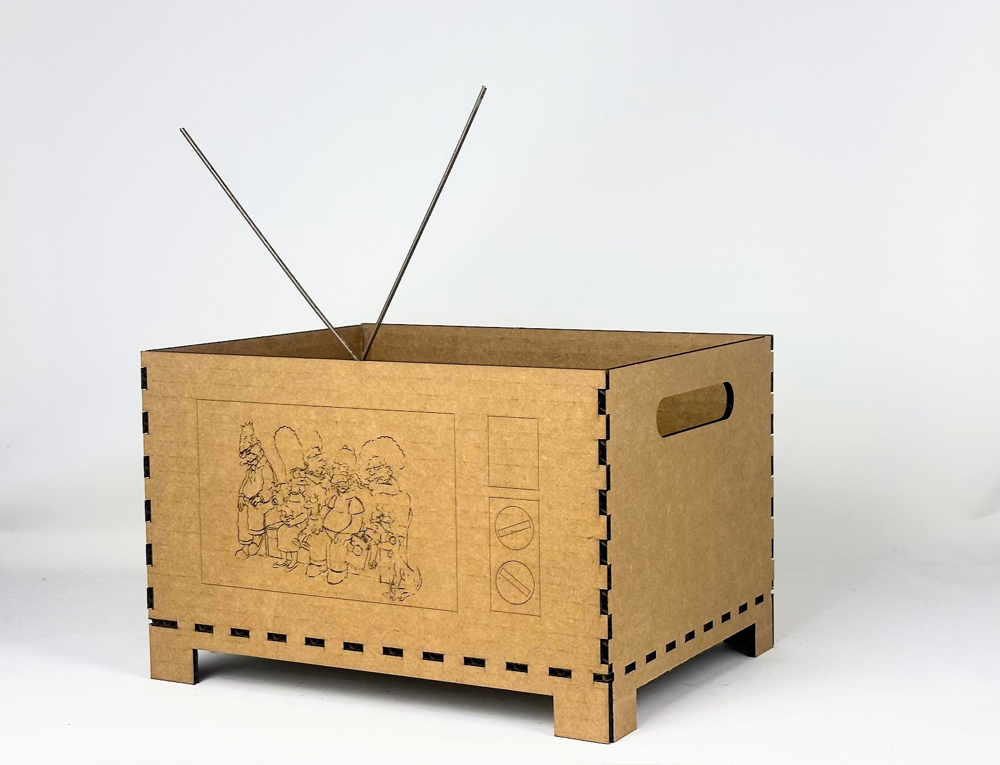
I followed these wonderful humans' help.
First I modeled a tiny screw that I found on the ground in the shop.
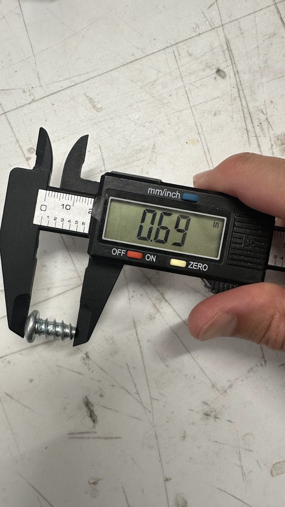
Had to learn how to add thread in fusion -- which was easy to approximate, but almost impossible to accurately replicate the screw I found.
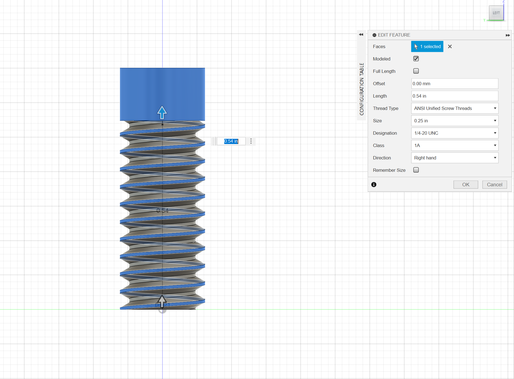
So I made a nut as well.
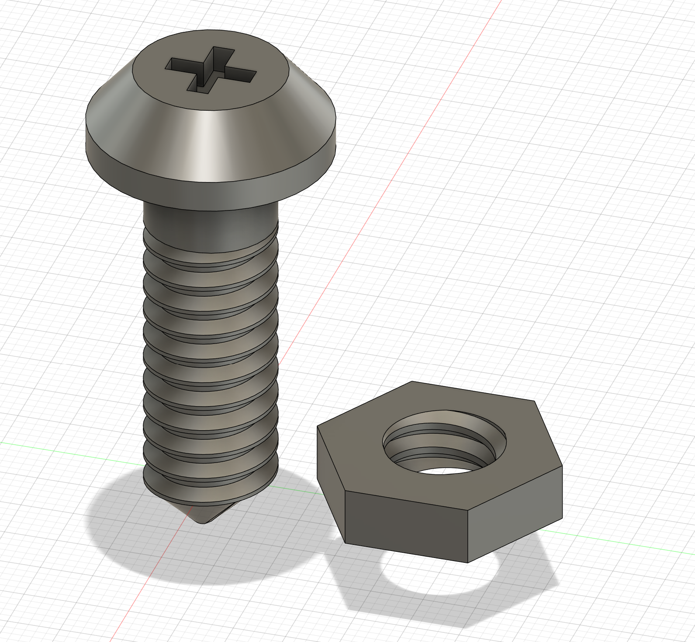
Then I tried my hand at something totally free of tutorials: a ziptie that was in the shop.
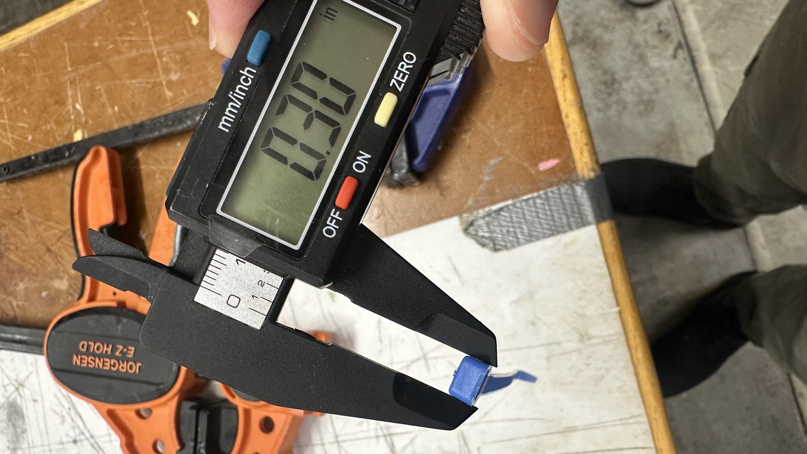
For such a disposable object, it's quite intricate.
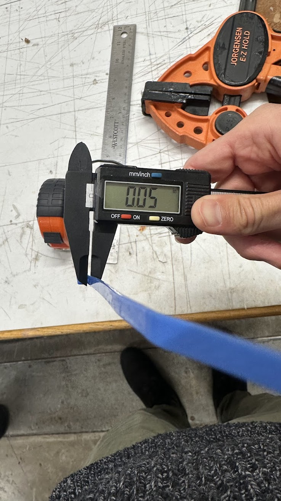
The tiny tooth in the buckle part took some finagling.
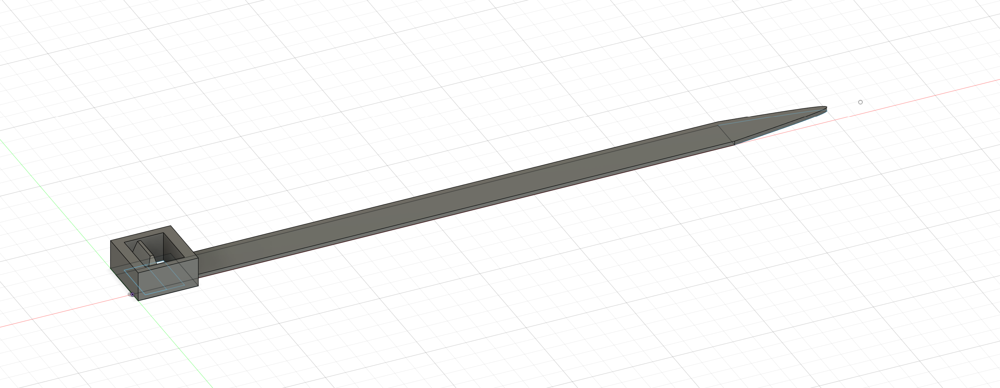
As did the teeth on the bottom -- but I was able to use a similar method as when I made the box's teeth but this time from memory! Very satisfying. Learning is COOL!!!
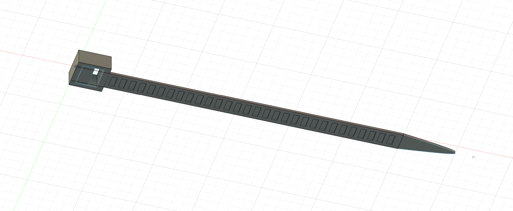
Finished sketch:
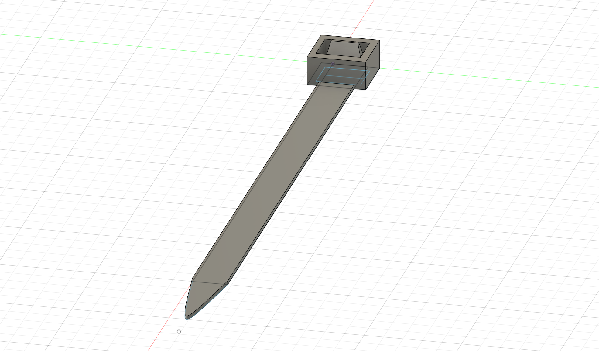